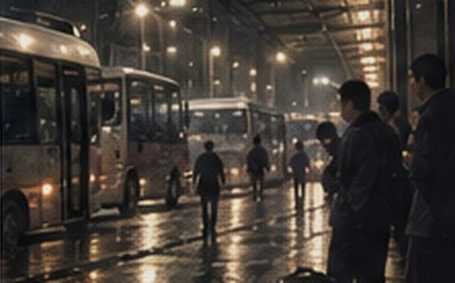

2008.08.23 榆桥客运站雨天记录
作者：海边小林 发布：2008-08-24 00:26 浏览：1287
本来想去等那批老金龙，结果下午一直下雨，站里临时换位不少。相机包也进了水，大部分时候只把时间和车型记在本子上，雨小下来以后才勉强拍了一张

18:51左右，东区站台| 时间 | 随手记 |
|---|---|
| 16:42 | 到站，雨刚开始大，南门口出租车排长队 |
| 16:58 | 西区拍到XMQ6115，车身广告已经褪色 |
| 17:12 | 五号位顶棚有人放水桶，工作人员在推积水 |
| 17:31 | 东区八号位进一台县际车，灯光很暗 |
| 17:46 | 十一号位开始有人排队，很多学生带大箱子 |
| 18:05 | 五号位旅客越来越少，导向牌往东区搬 |
| 18:29 | 东区临时换牌，十一号位的人越来越多 |
| 18:51 | 雨小了一阵，地面全是反光 |
| 19:04 | K203从东区正常离站，没拍好，手抖了 |
| 19:18 | 后面的K207还在站外等位 |
| 19:35 | 收相机准备回去，包边已经湿透 |
YC-公交迷：16:58那台我怎么看着像6113，不像6115啊
海边小林：我刚翻了前几次照片，你对，我记错了
老城：19点以后东区是不是一直压着车？
海边小林：是，我走的时候后面还有车在外面等
阿雷：这鬼天气你还去等车……服了
海边小林：这次记住了= =